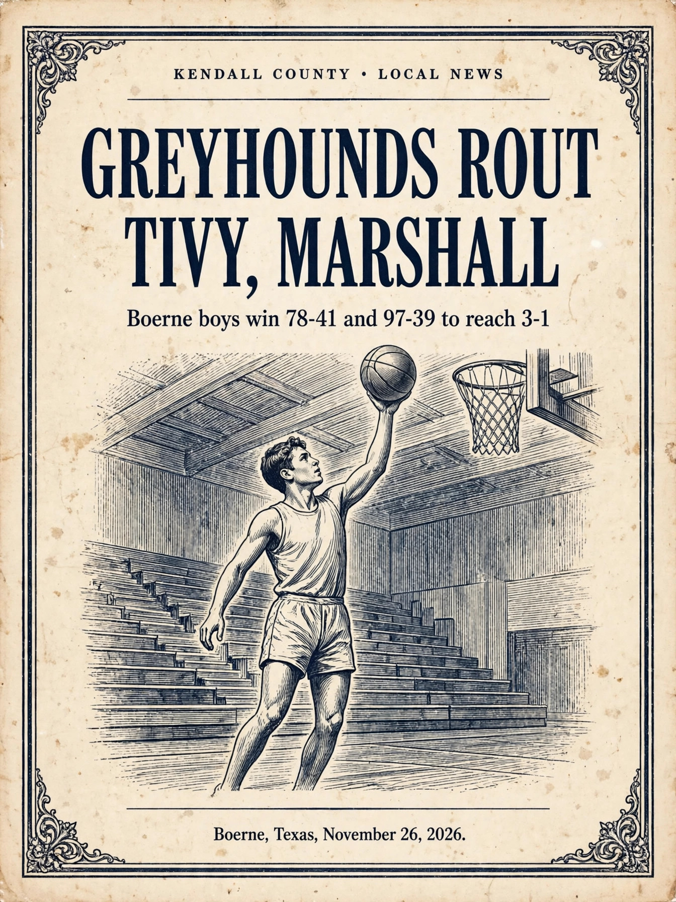

Boerne boys beat Tivy and Marshall
Boerne boys beat Tivy and Marshall
The Boerne High boys basketball team beat Northside Marshall 97-39 on Tuesday, November 24, at the Northside ISD Gym, per MaxPreps' posted final score.
The win moved Boerne to 3-1 on the season, per KENS 5's report of the game.
On Friday, November 20, Boerne visited Kerrville Tivy for a non-district game and beat the Antlers 78-41, per the Boerne Star's November 25 report.
Boerne led Tivy 17-7 after the first quarter and 40-15 at halftime. The Greyhounds outscored Tivy 21-12 in the third quarter and 17-13 in the fourth, per the Star.
Bo Pape led Boerne against Tivy with 15 points. Parker Ballenger scored 12 points, Beau Ketchner added 11, and Calvin Matsoso scored 10, per the Star.
Cannon Valdellon and Slade Salinas scored 8 points each against Tivy, Max Perez added 7, Noa Sanchez scored 5, and Riley Pierce scored 2 points and grabbed nine rebounds, per the Star.
Salinas and Matsoso each had 3 assists against Tivy, and Ketchner had 6 steals, per the Star.
What happens next: Boerne visits Long Creek on Tuesday, December 1, and then plays in the Lorena tournament December 3-5, per the Star.